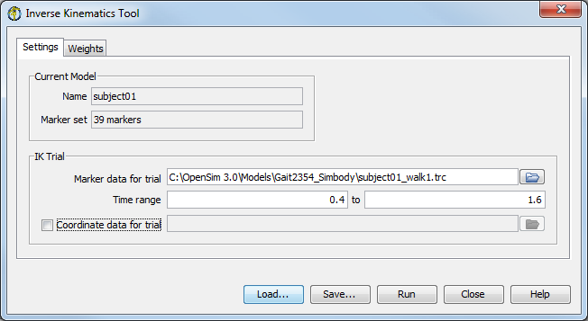
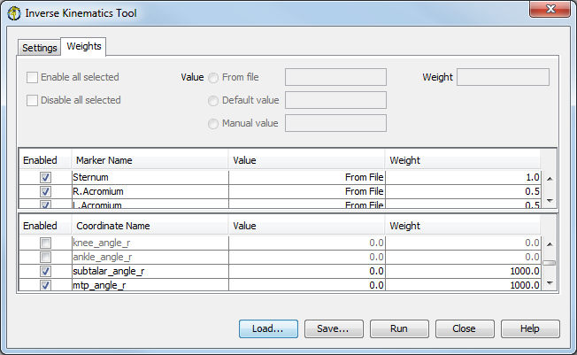

The topics covered in this section include:
To launch the IK Tool:
|  | Select Tools → Inverse Kinematics from the OpenSim main menu bar. The Settings pane is used to specify parameters related to the experimental marker data. The Weights pane is used to specify the marker and coordinate weights used in the weighted least squares equation.
|
|---|
The Inverse Kinematics Tool window, like all other OpenSim tools, operates on the current model. The name of the current model is shown in bold in the Navigator window. Any model can be made the current model by right-clicking on its name and selecting Make Current. See Opening, Closing, and Using the Navigator Window for information on opening models and making a particular model current.
At the bottom of all the Tool dialog windows are four buttons, located in what we call the Control Panel.
 | - The Load and Save buttons are used to load or save settings for the tool.
- The Run button starts execution.
- The Close button closes the window.
- The Help button takes you to the relevant section of the User Guide.
 | Note that the Close button can be clicked immediately after execution has begun; the execution will complete even though the window has been closed. |
- If you click Load…, you will be presented with a file browser that displays all files ending with the .xml suffix. You may browse for an appropriate settings file (e.g., subject01_Forward_Setup.xml or subject01_Scale_Setup.xml)) and click Open. The tool will then be populated with the settings in that setup file.
- If you have manually entered or modified settings, you may save those settings to a file for future use. If you click Save…, a Save dialog box will come up in which you can specify the name of the settings file. The name you specify for the file should have a suffix of .xml. Click Save to save the settings to file.
After you click Save, you may be presented with another dialog box that asks you whether or not you would like to save some of the settings to separate external files. This can be useful if you would like to reuse those settings for other trials or subjects. Check the boxes of the settings that you'd like to save to external files and specify the names of these files. All of these files should have a suffix of .xml.
|
|---|
The Settings pane is used to specify parameters related to the experimental marker data. The pane is organized into two main sections: Current Model and IK Trial.
| - The section for Current Model displays uneditable information about the current model. It gives the model name, as well as the number of markers associated with the model. Inverse kinematics requires that a marker set is associated with the model. This association with a subject-specific model is established at the time that a generic model is scaled to the subject markers visit Scaling for more information.
- The IK Trial section specifies the experimental marker data that the IK Tool will match with the current model.
- The Marker data for trial field contains the path to the marker data (in .trc format). Information from the file, such as the number of markers, the number of frames and the sampling frequency, as well as the start and end times of the data set, are reported in the Marker Data box on the right-hand side.
- You can specify the time range for performing inverse kinematics in the Time range field. By default, the complete time range is used.
- If you are using experimental generalized coordinate values in the IK trial, check the Coordinate data for trial checkbox and then specify the motion (.mot) file with the coordinate values in the textbox to the right.
|
|---|
Once a marker and possibly a coordinate file have been specified, the specific behavior of the inverse kinematics tool can be described and modified using the Weights pane (Figure below). Each entry in the table represents a task in the least-squares matching for either a marker (top table) or a coordinate (lower table). By left-clicking on a row, you select it, making the entry fields below the tables editable so you can specify weights and values for the selected marker(s) or coordinate(s). You can select multiple rows to edit by using ctrl + left-mouse-click or shift + left-mouse-click.
|  | The weight value affects to what degree a match should be satisfied. Larger weightings penalize errors for that marker or coordinate more heavily and thus should match the experimental value more closely (see How Inverse Kinematics Works). For coordinates, the coordinate value to be matched can come from a specified motion file, be set to its default value, or be set to a user-specified (manual) value.
| When running the IK Tool using the GUI, the results are not automatically saved to a file. They are associated with the model under its Motions node in the Navigator window (Navigator Window). You can view multiple IK results before saving them to a file. To save the IK results to a file, right click on the motion in the Navigator window and select Save as. |
|
|---|
The control panel at the bottom of the dialog window is used to save the settings in the dialog to a file, read the settings from a file, and to run IK. It has the same behavior as described in Scale Setup File
The Inverse Kinematics Tool is run using the command ik -S <setup file name>, for example:
ik -S subject01_Setup_IK.xml
{kind=link}
{kind=link}
{kind=link}
{kind=link}